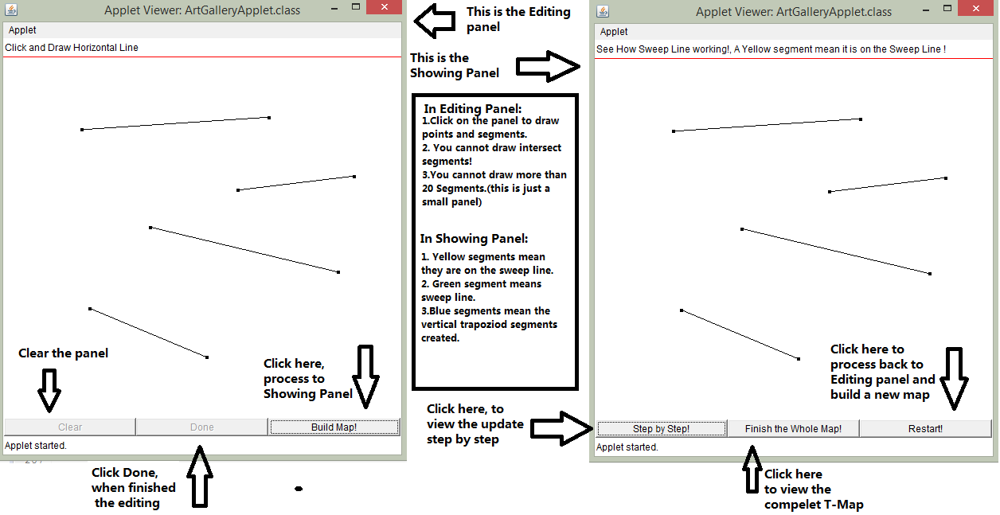

Computational Geometry, Fall 2016
To Construct Trapezoidal Map using Sweep Line Algorithm
Date Submitted: 8 Dec 2016
An applet showing the plane sweep algorithm to construct a trapezoidal map. It shows the sweep line itself, the known events, and the segments that are on the sweep line, and highlights the changes that happen during events.
-- Courtesy of Course Website
We will consider a general method of defining a subdivision of the plane into simple region. The method works not only for simple polygons but for much more general inputs as well.
Let S be a set line segments in the plane such that the segments do not intersect one another, except where the endpoint of one segment intersect the endpoint of another segments. And suppose that no two segment endpoints share the same x-coordinate which implies that there are no vertical segments.
We will produce a subdivision of space that with respect to these line segments. To do so, we start by enclosing all the segments within a large bounding rectangle. Next, imagine shooting a bullet path vertically upwards and downwards from the endpoints of each segment of S until it first hits another segment of S or the top or bottom of the bounding rectangle. The combination of the original segments and these vertical bullet paths defines a subdivision of the bounding rectangle called the trapezoidal map of S.
We could construct the trapezoidal decomposition using general sweep line algorithm. Imagine a vertical line (the sweep line) passing through each vertex in turn, where the vertices are in increasing x-order. At each vertex i.e. event, one or more trapezia are output. The key point here is how to update the even query in the sweep line algorithm to keep the correct ordering. Suppose endpoint v fall between edges a and b and v is a endpoint of c or shared endpoint by c and d. There are 3 types of event happened at each endpoint in our line set.
Since it is a sweep line algorithm, the total running time is O(n log n).

Source Code for the Applet. This includes the source code to run the applet and some supporting libraries.
Individual work:
Mengxue Zhang: Java Applet
Ying Wang: Website and Report
Wenjia Zhang: Applet and Report